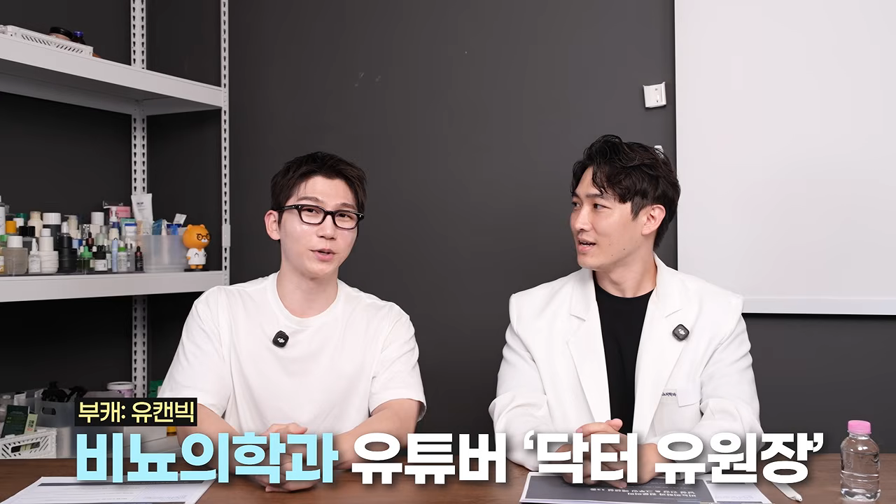
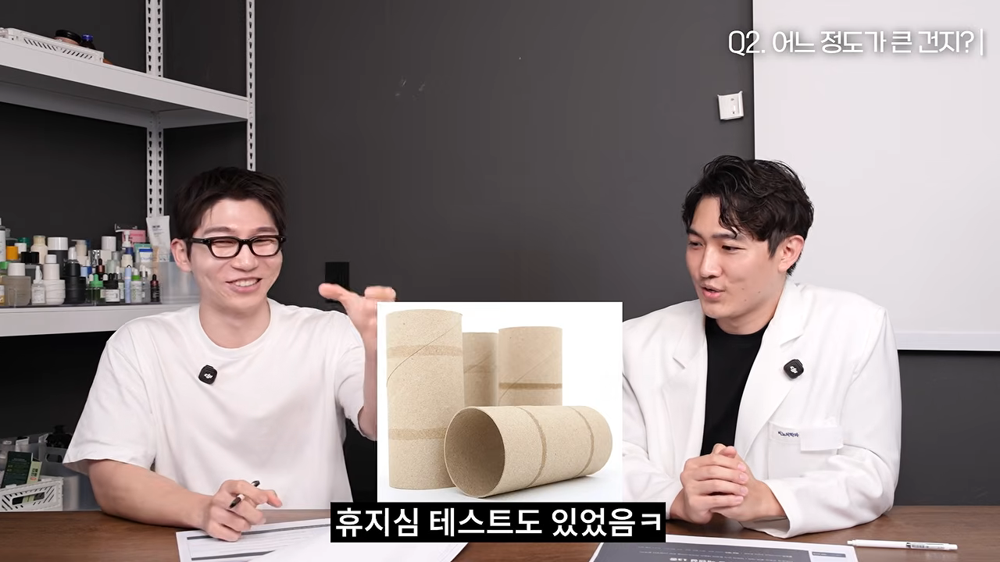
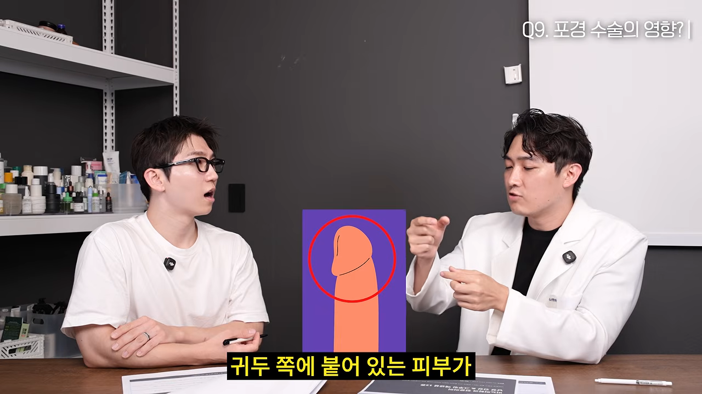
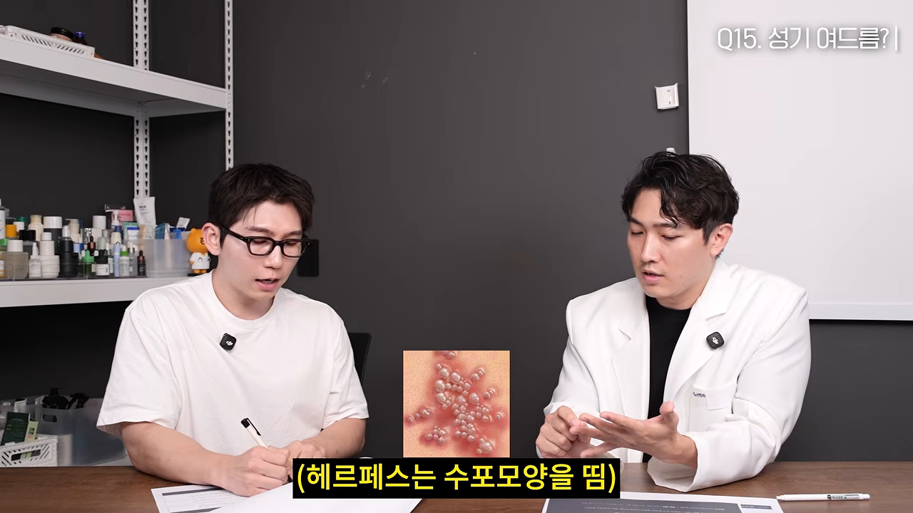
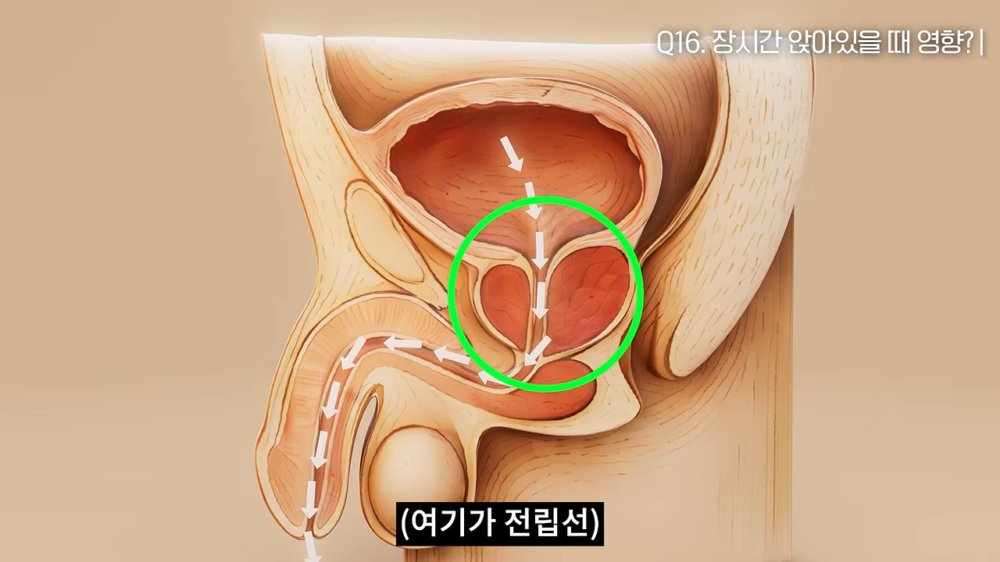
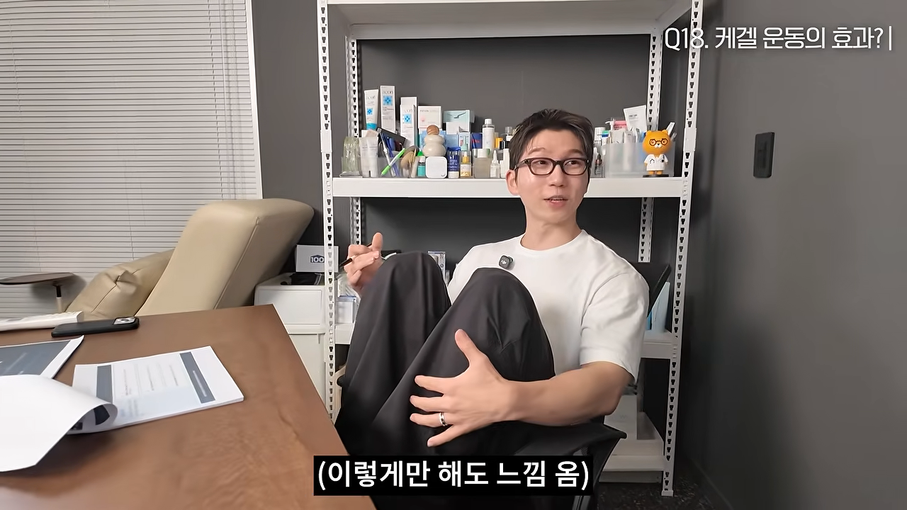

사정은 얼마나 자주 하는 게 좋을까요?
이 영상은 진행자가 비뇨의학과 전문의에게 남자들이 묻기 쑥스러운 질문 18개를 차례로 던지는 대담이에요. 첫 질문은 자위를 얼마나 자주 하는 게 좋으냐였어요.

3~4일에 한 번이 적당해요
전문의는 사정을 자주 한 남성이 전립선암에 덜 걸렸다는 유명한 연구를 예로 들어요. 연구 하나만으로 단정하긴 어렵지만, 규칙적인 사정이 전립선 건강에 영향을 준다는 건 분명하다고 봐요. 그래서 권하는 간격은 3~4일에 한 번이에요.
금욕보다 '영상 끊기'
예전 금딸 카페에서 돌던 '50일 참으면 근육이 붙고 100일이면 시력이 좋아진다'는 이야기는 근거가 없어요. 다만 자극적인 영상에 너무 익숙해진 사람이라면 한 달쯤 영상을 보지 않는 게 뇌와 성생활에 도움이 된다고 해요. 이때 핵심은 매체를 끊는 것이지 사정을 참는 게 아니에요.
오히려 한 달 넘게 사정하지 않으면 전립선에 염증 물질과 노폐물이 쌓여 울혈성 전립선염이 올 수 있어요. 무조건 참는 건 답이 아니라는 거예요.
크기에 관한 궁금증
크기 이야기는 숫자가 많이 나와요. 영상에서 나온 수치를 먼저 모아 볼게요.
| 항목 | 영상에서 말한 수치 | 근거로 든 것 |
|---|---|---|
| 한국 남성 평균 길이(발기 시) | 약 13.4cm | 군에서 한 연구들 |
| 상위 10% / 5% / 1% | 15cm / 16cm / 17cm 정도 | 정규 분포로 재미 삼아 계산 |
| 여성이 가장 만족한 크기 | 길이 16cm 안팎, 둘레는 정확히 기억 | 3D 모형을 고르게 한 연구 |
| 한국 남성 평균 둘레 | 11~11.5cm | 같은 방식의 통계 |
| 일반 휴지심 둘레 | 약 12cm | 휴지심 테스트 |
3D 모형 연구에서 재미있는 건 기억이에요. 나중에 다시 고르게 하니 길이는 잘 기억하지 못했는데 둘레는 정확히 기억했대요. 그래서 예전부터 길이보다 둘레가 중요하다는 말이 나왔다고 해요.

관상보다 비만이 더 확실해요
코 크기나 손가락 길이와 비례한다는 연구도 있지만 100%라고 보긴 어려워요. 훨씬 확실한 건 비만과의 관계예요.
소아비만이 있는 남자아이는 남성 호르몬 분비량이 절반으로 줄어든다고 해요. 음경이 자라야 할 성장기에 호르몬이 부족하면 덜 자랄 수 있어요. 성인도 비만이면 성기와 이어지는 부위에 살이 많이 붙어, 심하면 밖에서 거의 안 보이는 함몰음경이 되기도 해요. 그래서 남자아이는 성장기 체지방 관리가 특히 중요하다고 강조해요.
보형물과 확대 수술
요즘 보형물 시술에는 의료기기 회사가 만든 실리콘 링 같은 제품을 많이 쓰고, 업계 자료로는 한 해 3만 건쯤 된다고 해요.
해면체 자체를 늘리는 수술은 없어요. 다만 묻혀 있던 부분을 밖으로 꺼내거나 지방을 빼서, 밖으로 보이는 길이는 실제로 늘릴 수 있어요. 결국 삽입에 쓰이는 기능적인 길이가 늘어나는 거라 의미가 있다는 설명이에요.
발기부전과 조루
카페인 부스터는 반대 효과예요
운동할 때처럼 관계 전에 카페인 부스터나 커피를 마시면 도움이 될까요? 전문의의 답은 반대예요. 발기를 유지하고 사정을 늦추려면 부교감 신경이 켜져 있어야 해요. 그래야 아래쪽 혈관이 열려요. 그런데 카페인은 피를 빨리 돌게 하고 혈관을 조여요. 그래서 조루나 발기부전 증상이 있다면 오후 늦게부터는 커피도 피하는 게 좋다고 해요.
아르기닌보다 시트룰린
아르기닌은 먹으면 70% 정도가 장과 간에서 먼저 분해돼요. 게다가 아르기닌은 혈관을 넓히는 산화질소의 재료일 뿐, 그 자체가 혈관을 넓히지는 않아요. 그래서 먹어서 효과를 보기는 어렵다고 해요. 같은 재료라도 간을 거치지 않고 몸 안에서 아르기닌으로 바뀌는 시트룰린이 더 도움이 될 거라고 봐요.
심인성 발기부전은 자주, 편하게
20~30대 발기부전은 70~80%가 심인성이에요. 약 없이 풀려면 결국 많이 해 보는 수밖에 없다고 해요. 삽입에 매달리지 말고 스킨십을 중심으로 자주 하다 보면, 잘해야 한다는 압박이 줄어들어요.
조루는 네 가지로 나눠요
한두 번 움직였는데 끝나 버린다는 고민에 전문의는 먼저 조루의 종류부터 나눠요. 종류에 따라 치료가 달라지기 때문이에요.
| 유형 | 기준·특징 | 치료 방향 |
|---|---|---|
| 평생형(선천성) | 처음부터 그랬고, 대략 1분~1분 30초 이내. 감각이 예민하게 타고난 경우 | 약물이 필요할 가능성이 높고, 행동 치료를 함께 해요 |
| 후천성 | 원래 괜찮다가 만성질환이나 사고 뒤에 생겨요. 기준은 3분 | 원인 질환을 치료해요 |
| 가변성 | 상황과 컨디션에 따라 들쭉날쭉해요 | 컨디션 관리 |
| 주관적 | 시간은 충분한데 본인이 부족하다고 느껴요 | 미디어에서 얻은 잘못된 지식과 과한 기대를 바로잡아요 |
행동 치료에는 사정할 것 같은 느낌이 오면 멈췄다가 다시 하는 스톱 앤 스타트와 케겔 운동이 있어요. 스톱 앤 스타트는 타이밍이 어려워요. 신호가 오기 전에 멈춰야 하는데, 늦어서 손으로 억지로 막으면 정액이 역류해 전립선염이나 만성 골반 통증이 생길 수 있어요. 효과도 케겔 운동이 70% 정도로, 스톱 앤 스타트의 40~50%보다 높다고 해요.
찬물 샤워를 하면 조루가 낫는다는 말은 근거가 없어요. 오히려 몸을 깨워 교감 신경을 켜는 행동이라 반대 방향이에요.
성기능에 좋은 운동 세 가지
전문의가 꼽는 건 하체 운동, 달리기, 케겔 운동이에요. 셋은 맡은 일이 달라서 다 하는 게 좋아요. 하체·엉덩이 근육은 몸 근육의 70%를 차지해서, 이 근육이 살아 있어야 남성 호르몬이 제대로 나와요. 달리기는 혈관을 깨끗하게 하고 혈류를 늘려 단단한 발기를 도와요. 케겔 운동은 들어온 피를 꽉 붙잡아 두는 근육을 키워요.
포경수술, 꼭 해야 할까요?
전문의 세대는 80% 정도가 포경수술을 했지만, 요즘은 성인이 될 때까지 지켜보는 추세예요. 사춘기가 끝날 무렵이면 대부분 자연스럽게 포경 상태가 되기 때문이에요. 초등학생 때 수술한 진행자는 '나도 피해자'라며 웃어요.
문제는 크기가 아니라 피부예요
수술이 해면체 크기를 바꾸지는 않아요. 문제는 남는 피부의 양이에요. 너무 짧게 남기면 관계 중에 피부가 찢어지기도 하고, 피부를 늘리는 수술을 따로 받기도 해요. 그래서 성장이 끝나 정확하게 재단할 수 있을 때 하는 게 가장 좋다고 해요.

글라이딩 효과
피부 여유분이 어느 정도 있으면, 관계할 때 안쪽 심지와 바깥 피부가 함께 움직이며 입체적인 감각을 느낄 수 있대요. 이걸 글라이딩 효과라고 불러요.
전문의는 팔꿈치로 비유해요. 팔을 편 상태에서 팔꿈치를 긁을 때보다 굽혀서 피부가 팽팽할 때 긁는 게 자극이 더 세죠. 피부 여유분이 없으면 자극이 직접 꽂혀서 조루가 생길 수 있어요. 반대로 너무 많으면 감각이 무뎌 사정이 잘 안 되는 지루가 생길 수 있어요. 적당히 남아 있는 게 가장 좋다는 거예요.
관계 시간, 임신 준비, 탈모약
아침과 저녁, 장단점이 달라요
남성 호르몬은 아침 7~9시쯤 가장 높아요. 이때 하면 몸은 최고의 컨디션이에요. 밤에 하면 하루를 마치고 마음이 편해서 더 즐길 수 있어요. 호르몬이 높을 때 만들어지는 정자는 운동성 같은 질이 조금 더 좋을 수는 있다고 해요.
딸 낳는 법?
딸 둘을 둔 전문의는 의사들 사이에서 도는 이야기를 꺼내요. 정형외과처럼 방사선을 많이 쬐는 과에 딸이 많다는 연구가 실제로 있었대요. 결론은 통계적으로 의미 있지 않다는 쪽이었어요. 다만 방사선에 손상된 정자로 생긴 임신이 일찍 유산되면서 생긴 차이일 수 있다는 해석이 붙었다고 해요.
남자도 100일 전부터 준비해요
난임 원인의 절반은 남성 쪽에 있어요. 정자가 만들어지는 데 약 74일이 걸리니, 대략 3개월, 넉넉히 100일 전부터 운동과 음식, 영양제, 생활 습관을 챙기라고 해요. 부모의 습관이 자녀 DNA 자체를 바꾸지는 않지만, 좋은 신호는 끄고 나쁜 신호는 켜는 식으로 유전자의 스위치를 조정할 수 있다는 후성유전학 이야기도 덧붙여요.
탈모약은 정액에 영향을 줘요
탈모약이 기형아를 만드는 약은 아니라고 해요. 대신 정액량, 정자 수, 정자 운동성을 떨어뜨려 임신 성공 확률을 낮춰요. 임신을 준비한다면 끊고 기다리는 기간이 피나스테리드는 3개월, 두타스테리드는 6개월이에요.
더 조심할 건 여성의 노출이에요. 값을 아끼려고 같은 성분의 전립선비대증 약을 받아 쪼개 먹는 경우가 많은데, 그 가루나 조각을 여성이 만지면 안 돼요. 임신 8~12주에 남자 태아의 생식기가 만들어지는데, 이때 약 성분이 피부로 흡수되면 요도하열이 생길 수 있어요. 심하면 음낭 쪽에서 소변이 나오기도 해요.
청결제와 성기 피부 질환
남성 청결제, 쓰는 편이 나아요
전문의는 남성 청결제를 직접 쓰고 있고, 쓰는 게 낫다고 봐요. 땀과 피지가 많은 부위라 세균과 곰팡이가 살기 좋아요. 그런데 세정력이 센 일반 비누는 피부를 지키는 피지 보호막까지 씻어내요. 그러면 가렵고, 긁다 보면 피부염으로 번져요.
성기에 난 돌기, 구분부터 해요
성기에 여드름처럼 나는 건 대부분 모낭염이에요. 만지면 따갑고 붉게 올라와요. 이걸 다른 돌기들과 구분하는 게 먼저예요.
| 돌기 | 모양 | 영상에서 말한 성격 |
|---|---|---|
| 모낭염(흔히 '여드름') | 붉고 따가워요 | 크게 걱정할 질환은 아니에요 |
| 진주양 음경 구진 | 귀두 둘레에 하얀 좁쌀이나 진주알처럼 줄지어 나요 | 남성 호르몬 때문에 생기는 정상 피부 돌기예요 |
| 헤르페스 | 물집(수포)이 전형적이에요 | 주의해야 하는 질환이에요 |
| 곤지름 | 쥐젖처럼 하나로 시작해 여러 개로 번지고, 방치하면 브로콜리처럼 빼곡해져요 | 주의해야 하는 질환이에요. 원인은 HPV예요 |

곤지름과 가다실
HPV는 여성에게 자궁경부암을 일으키는 바이러스예요. 남성에게 음경암은 아주 드물고, 주로 곤지름을 일으켜요. 평소에는 잠복해 있다가 면역이 떨어지거나 위생이 나쁠 때 나타나서, 언제 옮았는지 알기 어려워요.
그래서 요즘은 남자도 가다실을 많이 맞는다고 해요. 맞으면 곤지름은 99% 막을 수 있다고 전문의는 말해요. 가장 효과가 큰 건 바이러스에 한 번도 노출되지 않았을 때예요. 백신은 치료제가 아니라서 이미 들어온 바이러스를 없애지는 못해요. 그래도 몸에 숨어 있던 바이러스를 억제해 덜 나타나게 하는 효과가 있어서, 이왕이면 빨리 맞는 게 좋다고 해요.
전립선, 잔뇨감, 케겔 운동
전립선은 앉으면 바로 눌리는 자리예요
전립선은 회음부 안쪽에 있어요. 성기능에만 관여하는 게 아니에요. 방광에 모인 소변이 밖으로 나갈 때, 방광 입구 바로 아래에서 소변길을 터널처럼 감싸고 있는 게 전립선이에요.

전문의는 주먹으로 비유해요. 한 시간 동안 주먹을 꽉 쥐고 있으면 손바닥이 하얗게 질리고, 펴도 한동안 뻐근하죠. 혈관이 많고 호르몬을 만드는 예민한 세포로 된 전립선도 똑같이 눌리면서 세포 손상과 염증이 생겨요.
요즘 비뇨기과에는 소변을 너무 자주 봐서 오는 10~20대가 많대요. 대부분 만성 전립선염이나 과민성 방광이에요. 해결법은 간단해요. 한 시간에 1~2분만 일어나 가볍게 걸어도 90% 이상 회복된다고 해요. 발기를 돕는 신경이 전립선 양옆을 지나가서, 전립선에 염증이 생기면 발기에도 영향이 가요.
잔뇨감은 뭉친 근육 탓이에요
소변을 다 보고 넣었는데 몇 방울이 바지에 떨어지는 잔뇨감은 10대 때는 없던 증상이에요. 전문의는 그동안의 생활 습관, 특히 하루 절반 넘게 앉아 지내는 습관이 쌓인 결과라고 봐요. 무거운 가방을 오래 메면 어깨가 뭉치듯, 회음부 근육과 골반저근육이 뭉치고 처진 거예요. 그래서 풀어 주고, 처진 곳은 단련해야 해요.
케겔 운동, 이렇게 해요
전문의는 케겔 운동이 발기부전 증상을 70% 정도 개선하고, 사정 시간을 4.7배 늘렸다는 연구가 있다고 말해요. 정확히는 사정을 통제하는 힘을 길러 주는 거예요. 발기와 사정에 관여하는 근육이 회음부와 음경 뿌리를 감싸고 있어서, 이 근육에 적당한 근력이 있어야 해요. 나이가 들면 근감소증으로 근육이 빠지니 더 중요해요.

- 편하게 누워 무릎을 세워요. 엉덩이·허벅지·아랫배에 힘이 안 들어가는 자세예요.
- 손을 회음부에 대고, 손이 닿은 부위를 조인다는 생각으로 5초 동안 꽉 조여요.
- 5초 동안 천천히 풀어요.
- 5분 동안 1분마다 10번씩 반복해요.
전문의가 특히 강조하는 건 푸는 단계예요. 운동할 때 당기는 데만 신경 쓰듯, 케겔도 조이는 데만 집중하기 쉬워요. 그런데 실전에서 나올 것 같을 때 힘을 꽉 주면 오히려 더 빨리 끝나요. 사정할 때 그 근육이 불규칙하게 수축하는데, 미리 조이면 뇌가 '지금이구나' 하고 받아들이기 때문이에요.
그때는 오히려 힘 주는게 아니라 숨을 들이마시면서 그쪽을 이렇게 툭 풀어준다. 발기도 지속이 되고 사정도 지연이 되고
— 영상 23:30